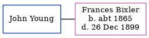

John Young, the husband of Frances J Bixler (the third cousin three-times-removed on the mother's side of Nigel Horne), and married Frances in Allen, Indiana, USA on 2 Oct 18821.
Citations
United States Marriages - Findmypast
Family Tree

Map
Generated by ged2site. Last updated on Jul 3, 2024